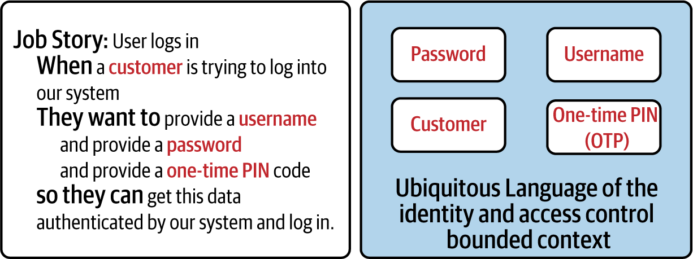
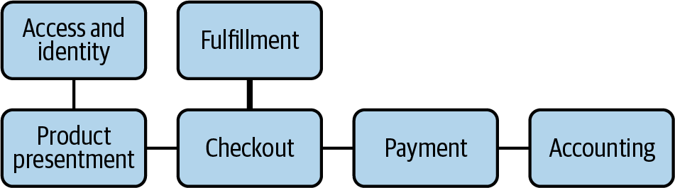
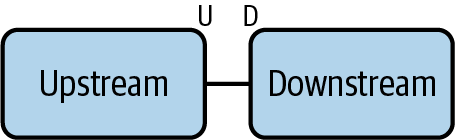
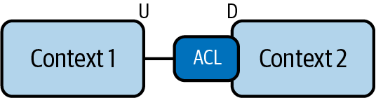
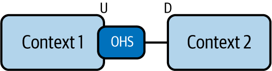
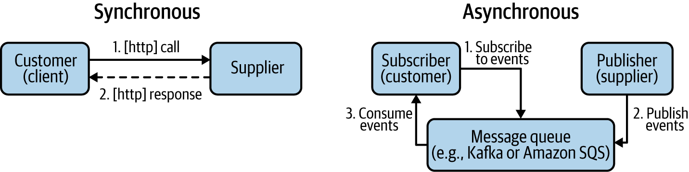
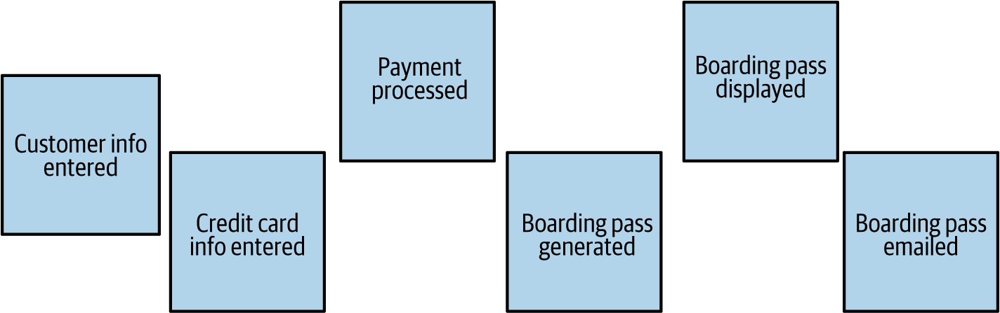
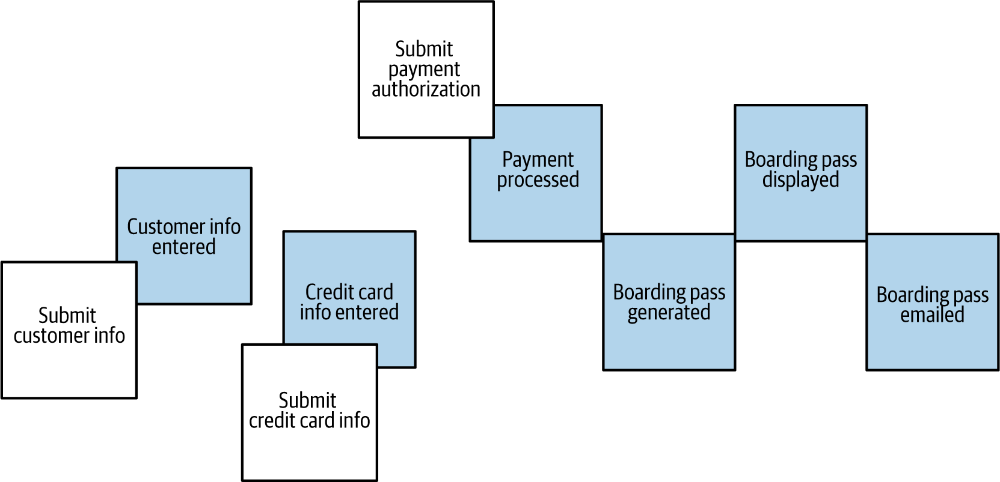
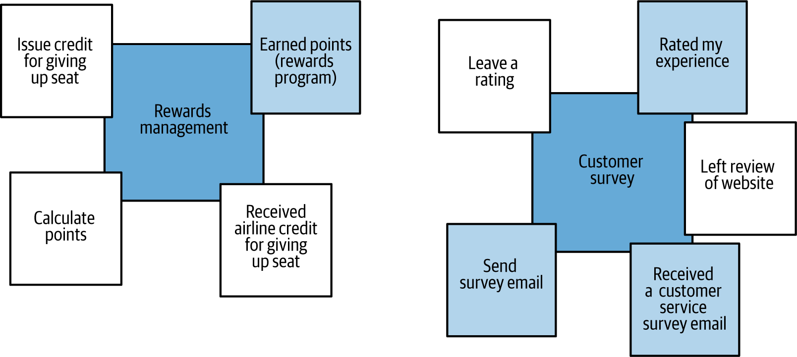

Một trong những khía cạnh khó nhất khi xây dựng một hệ thống microservices thành công là xác định đúng ranh giới microservice. Về trực giác, việc tách một codebase lớn thành những phần nhỏ hơn, đơn giản hơn và liên kết lỏng hơn sẽ cải thiện khả năng bảo trì, nhưng làm thế nào để quyết định nên tách mã ở đâu và tách thế nào để đạt được những thuộc tính mong muốn đó? Chúng ta dùng quy tắc nào để biết đâu là điểm một dịch vụ kết thúc và dịch vụ khác bắt đầu? Trả lời những câu hỏi nền tảng này không hề dễ. Rất nhiều nhóm mới tiếp cận microservices vấp phải chúng. Vẽ sai ranh giới microservice có thể làm suy giảm đáng kể lợi ích của việc dùng microservices, thậm chí trong một số trường hợp còn khiến toàn bộ nỗ lực đi chệch hướng. Vì vậy, không có gì ngạc nhiên khi câu hỏi thường gặp và cấp bách nhất mà người thực hành microservices đặt ra là: làm thế nào để một ứng dụng lớn được cắt tách đúng cách thành một tập hợp microservices?
Trong chương này, chúng ta sẽ đi sâu vào phương pháp hàng đầu để phân tích, mô hình hóa và phân rã hiệu quả các miền lớn (Domain-Driven Design), giải thích lợi ích về hiệu quả của việc dùng Event Storming cho phân tích miền, và kết lại bằng việc giới thiệu Universal Sizing Formula, một hướng dẫn độc đáo để định cỡ microservices hiệu quả.
Ngay trong tên của mẫu kiến trúc này, chúng ta đã có chữ micro. Kiến trúc mà chúng ta đang thiết kế là kiến trúc của các dịch vụ “micro”! Nhưng dịch vụ của chúng ta nên “micro” đến mức nào? Rõ ràng chúng ta không đo chiều dài vật lý của một thứ gì đó rồi giả định rằng micro có nghĩa là một phần triệu mét. Vậy với mục đích của chúng ta, micro nghĩa là gì? Chúng ta phải cắt bài toán lớn của mình thành các dịch vụ nhỏ hơn như thế nào để đạt được những lợi ích vốn được hứa hẹn của các dịch vụ “micro”? Hay là ta in mã nguồn ra giấy, dán tất cả lại với nhau rồi đo chiều dài thực của nó? Hoặc bớt đùa đi một chút, liệu chúng ta có nên dựa vào số dòng mã nguồn, giữ con số đó nhỏ để bảo đảm mỗi microservice cũng đủ nhỏ? Nhưng bao nhiêu thì là “đủ”? Hay ta cứ tùy tiện tuyên bố rằng mỗi microservice không được có quá 500 dòng mã? Chúng ta cũng có thể vạch ranh giới theo các biên chức năng quen thuộc của mã nguồn và nói rằng mỗi năng lực có độ hạt nhỏ được biểu diễn bởi một hàm trong mã nguồn hệ thống chính là một microservice. Theo cách này, ta có thể xây cả ứng dụng bằng các hàm serverless, và tuyên bố mỗi hàm như vậy là một microservice. Gọn gàng và dễ dàng! Đúng không? Có lẽ không.
Trong thực tế, từng cách tiếp cận đơn giản hóa như vậy đều đã được thử, và tất cả đều có những nhược điểm đáng kể. Dù số dòng mã nguồn (SLOC) từng có lúc được dùng như một thước đo nỗ lực hay độ phức tạp, ngày nay người ta đã thừa nhận rộng rãi rằng đây là một thước đo kém để xác định độ phức tạp hoặc kích thước thực sự của mã, và còn rất dễ bị thao túng. Vì vậy, ngay cả khi mục tiêu của chúng ta là tạo ra các dịch vụ “nhỏ” với hy vọng giữ chúng đơn giản, thì số dòng mã vẫn là một thước đo tồi.
Vạch ranh giới theo các biên chức năng còn hấp dẫn hơn nữa. Và điều đó càng hấp dẫn hơn khi các hàm serverless như Lambda của Amazon Web Services ngày càng phổ biến. Dựa trên năng suất cao và mức độ phổ biến rộng rãi của AWS Lambda, nhiều nhóm đã vội vàng tuyên bố rằng các hàm đó chính là “microservices”. Nếu đi theo con đường này, bạn sẽ gặp một số vấn đề đáng kể, trong đó quan trọng nhất là:
Theo Lewis và Fowler, microservices nên được “tổ chức xoay quanh các năng lực kinh doanh”, chứ không phải các nhu cầu kỹ thuật. Tương tự, trong một bài viết từ năm 1972, Parnas khuyến nghị phân rã hệ thống dựa trên việc bao đóng mô-đun trước các thay đổi thiết kế theo thời gian. Không cách tiếp cận nào trong hai cách này nhất thiết lại khớp mạnh với ranh giới của các hàm serverless.
Mức độ chi tiết bùng nổ quá sớm trong vòng đời dự án microservices có thể đưa vào một mức độ phức tạp đè bẹp mọi thứ, khiến nỗ lực microservices dừng lại ngay tại chỗ, thậm chí trước cả khi nó có cơ hội cất cánh và thành công.
Trong Chương 1, chúng ta đã nêu mục tiêu chính của kiến trúc microservices: về cốt lõi, đó là tối thiểu hóa chi phí phối hợp trong một môi trường phức tạp có nhiều nhóm, để đạt được sự hài hòa giữa tốc độ và an toàn ở quy mô lớn. Vì vậy, dịch vụ nên được thiết kế theo cách giảm thiểu nhu cầu phối hợp giữa các nhóm làm việc trên những microservice khác nhau. Tuy nhiên, nếu chúng ta bẻ nhỏ mã thành các hàm theo cách không thực sự dẫn đến việc giảm phối hợp, thì kết quả sẽ là những microservice có kích thước sai lệch. Việc cứ mặc định rằng bất kỳ cách tổ chức mã nào thành các hàm serverless cũng sẽ giảm phối hợp là một ngộ nhận.
Trước đó chúng ta đã nói rằng một lý do quan trọng để tránh cách tiếp cận dựa trên kích thước hoặc bám theo hàm khi tách ứng dụng thành microservices là nguy cơ tối ưu hóa quá sớm, nghĩa là có quá nhiều dịch vụ quá nhỏ ngay từ giai đoạn đầu trong hành trình microservices của bạn. Những đơn vị tiên phong áp dụng microservices như Netflix, SoundCloud, Amazon và nhiều nơi khác cuối cùng đúng là đã có rất nhiều microservices! Tuy nhiên, điều đó không có nghĩa là các công ty này bắt đầu ngay từ ngày đầu tiên với hàng trăm microservice có độ hạt rất nhỏ. Thay vào đó, số lượng microservices lớn là trạng thái mà họ tối ưu tới sau nhiều năm phát triển, sau khi đã đạt đến mức trưởng thành vận hành đủ để xử lý mức độ phức tạp đi kèm với độ hạt cao của microservices.
Việc định cỡ dịch vụ trong một kiến trúc microservices chắc chắn là một hành trình cần diễn ra theo thời gian. Một cách chắc chắn để phá hỏng toàn bộ nỗ lực là cố thiết kế một hệ thống có độ hạt quá cao quá sớm trong hành trình đó.
Dù bạn đang làm một dự án greenfield hay phân rã một monolith hiện có, cách tiếp cận đúng đắn chắc chắn là bắt đầu chỉ với một số ít dịch vụ rồi từ từ tăng số lượng microservices theo thời gian. Nếu điều này khiến một vài microservice ban đầu lớn hơn trạng thái mục tiêu của chúng, điều đó hoàn toàn ổn. Bạn có thể tách chúng sau.
Ngay cả khi chúng ta bắt đầu chỉ với một vài microservices và đi chậm rãi, chúng ta vẫn cần một phương pháp đáng tin cậy để xác định cách định cỡ microservices. Tiếp theo, chúng ta sẽ khám phá những thực tiễn tốt đã được dùng thành công trong ngành.
Khi bắt đầu tìm hiểu các thực tiễn tốt nhất trong thiết kế microservices, Sam Newman đã đưa ra một số nguyên tắc nền tảng trong cuốn Building Microservices (O’Reilly). Ông gợi ý rằng khi vẽ ranh giới dịch vụ, chúng ta nên hướng tới một thiết kế sao cho các dịch vụ tạo thành có những đặc điểm sau:
Các dịch vụ nên tương đối ít biết về nhau và độc lập với nhau, để một sửa đổi mã trong một dịch vụ không tạo ra hiệu ứng dây chuyền sang các dịch vụ khác. Chúng ta cũng thường muốn hạn chế số loại lời gọi runtime khác nhau từ dịch vụ này sang dịch vụ kia, vì ngoài vấn đề hiệu năng tiềm ẩn, giao tiếp quá nhiều còn có thể dẫn đến sự gắn kết chặt giữa các thành phần. Nếu nhìn từ góc độ “tối thiểu hóa phối hợp”, lợi ích của liên kết lỏng giữa các dịch vụ là khá hiển nhiên.
Các tính năng có trong một dịch vụ nên liên quan chặt chẽ với nhau, còn các tính năng không liên quan nên được bao đóng ở nơi khác. Theo cách này, nếu bạn cần thay đổi một đơn vị chức năng logic, bạn sẽ có thể thay đổi nó ở một chỗ, từ đó giảm thời gian để phát hành thay đổi đó, một chỉ số rất quan trọng. Ngược lại, nếu phải thay đổi mã ở nhiều dịch vụ, chúng ta sẽ phải phát hành nhiều dịch vụ khác nhau cùng lúc để chuyển giao thay đổi đó. Điều này đòi hỏi mức phối hợp đáng kể, đặc biệt nếu các dịch vụ đó được nhiều nhóm “sở hữu”, và nó sẽ trực tiếp làm suy giảm mục tiêu tối thiểu hóa chi phí phối hợp của chúng ta.
Vì phần lớn các yêu cầu sửa đổi hoặc mở rộng chức năng đều được thúc đẩy bởi nhu cầu kinh doanh, nên nếu ranh giới của chúng ta bám sát ranh giới của các năng lực kinh doanh, thì tự nhiên hai yêu cầu thiết kế đầu tiên ở trên cũng dễ được đáp ứng hơn. Trong thời kỳ kiến trúc monolith, các kỹ sư phần mềm thường cố chuẩn hóa theo những “mô hình dữ liệu canonical”. Tuy nhiên, thực tế lặp đi lặp lại đã cho thấy rằng các mô hình dữ liệu chi tiết dùng để mô tả thực tại không bền lâu, chúng thay đổi khá thường xuyên, và việc chuẩn hóa theo chúng dẫn đến phải làm lại thường xuyên. Ngược lại, thứ bền vững hơn là tập hợp các năng lực kinh doanh mà các phân hệ của bạn cung cấp. Một mô-đun kế toán sẽ luôn có thể cung cấp tập năng lực mong muốn cho hệ thống lớn hơn của bạn, bất kể cách vận hành bên trong của nó có tiến hóa theo thời gian như thế nào.
Những nguyên tắc thiết kế này đã chứng minh được tính hữu ích và được giới thực hành microservices đón nhận rộng rãi. Tuy nhiên, chúng vẫn là những nguyên tắc khá cấp cao, thiên về định hướng, và có thể nói là chưa cung cấp chỉ dẫn đủ cụ thể về việc định cỡ dịch vụ cho người làm hằng ngày. Trong hành trình tìm một phương pháp thực tế hơn, nhiều người đã tìm đến Domain-Driven Design.
Phương pháp thiết kế phần mềm mang tên Domain-Driven Design (DDD) ra đời từ rất lâu trước kiến trúc microservices. Nó được Eric Evans giới thiệu vào năm 2003 trong cuốn sách kinh điển cùng tên, Domain-Driven Design: Tackling Complexity in the Heart of Software (Addison-Wesley). Tiền đề chính của phương pháp này là khẳng định rằng, khi phân tích các hệ thống phức tạp, chúng ta nên tránh tìm kiếm một mô hình miền hợp nhất duy nhất đại diện cho toàn bộ hệ thống. Thay vào đó, như Evans đã nói trong sách của mình:
Nhiều mô hình cùng tồn tại trong các dự án lớn, và trong nhiều trường hợp điều này hoạt động tốt. Những mô hình khác nhau áp dụng trong những ngữ cảnh khác nhau.
Sau khi Evans xác lập rằng một hệ thống phức tạp về bản chất là tập hợp của nhiều mô hình miền, ông đã tiến thêm một bước có tính quyết định bằng cách đưa ra khái niệm bounded context. Cụ thể, ông phát biểu rằng:
Một Bounded Context xác định phạm vi áp dụng của từng mô hình.
Bounded context cho phép việc hiện thực và chạy runtime của các phần khác nhau trong hệ thống lớn hơn diễn ra mà không làm hỏng những mô hình miền độc lập có mặt trong hệ thống đó. Sau khi định nghĩa bounded context, Eric còn hữu ích hơn nữa khi cung cấp một công thức để xác định các biên tối ưu của một bounded context bằng cách thiết lập khái niệm Ubiquitous Language.
Để hiểu ý nghĩa của Ubiquitous Language, điều quan trọng là phải nhận ra rằng một mô hình miền được định nghĩa tốt trước hết cung cấp một vốn từ vựng chung gồm các thuật ngữ và khái niệm đã được xác định, tức một ngôn ngữ chung để mô tả miền, do chuyên gia nghiệp vụ và kỹ sư cùng nhau phát triển trong sự cộng tác chặt chẽ, cân bằng giữa yêu cầu kinh doanh và cân nhắc hiện thực. Ngôn ngữ chung này, hay từ vựng dùng chung, chính là thứ trong DDD chúng ta gọi là Ubiquitous Language. Tầm quan trọng của nhận định này nằm ở chỗ thừa nhận rằng cùng một từ có thể mang những ý nghĩa khác nhau trong các bounded context khác nhau. Một ví dụ kinh điển được minh họa trong Hình 4-1. Thuật ngữ account mang ý nghĩa rất khác nhau trong các ngữ cảnh quản lý định danh và truy cập, quản lý khách hàng, và kế toán tài chính của một hệ thống đặt chỗ trực tuyến.
Thật vậy, trong ngữ cảnh quản lý định danh và truy cập, một account là tập thông tin xác thực dùng cho xác thực và phân quyền. Trong bounded context quản lý khách hàng, account là tập các thuộc tính nhân khẩu học và thông tin liên hệ, còn trong ngữ cảnh kế toán tài chính, đó có lẽ là thông tin thanh toán cùng danh sách các giao dịch trước đây. Chúng ta có thể thấy cùng một từ tiếng Anh cơ bản lại được dùng với những ý nghĩa rất khác nhau trong các ngữ cảnh khác nhau, và điều đó hoàn toàn ổn, vì chúng ta chỉ cần thống nhất về ý nghĩa phổ quát của các thuật ngữ, tức Ubiquitous Language, bên trong bounded context của một mô hình miền cụ thể. Theo DDD, bằng cách quan sát những đường biên nơi các thuật ngữ thay đổi ý nghĩa, chúng ta có thể xác định ranh giới của các context.
Trong DDD, không phải mọi thuật ngữ xuất hiện trong đầu khi thảo luận về một mô hình miền đều đi vào Ubiquitous Language tương ứng. Chỉ những khái niệm trong một bounded context giữ vai trò cốt lõi đối với mục đích chính của context đó mới là một phần của Ubiquitous Language của nhóm; mọi thứ khác nên được loại ra. Những khái niệm cốt lõi này có thể được khám phá từ tập JTBD mà bạn tạo ra cho bounded context đó. Ví dụ, hãy xem Hình 4-2.

Trong ví dụ này, chúng ta dùng định dạng Job Story đã giới thiệu ở Chương 3 và áp dụng nó cho một job thuộc bounded context quản lý định danh và truy cập. Chúng ta có thể thấy rằng các danh từ then chốt, được tô nổi trong Hình 4-2, tương ứng với các thuật ngữ trong Ubiquitous Language liên quan. Chúng tôi rất khuyến nghị kỹ thuật dùng các danh từ then chốt từ những Job Story được viết tốt để xác định các thuật ngữ từ vựng phù hợp với Ubiquitous Language của bạn.
Bây giờ khi đã bàn qua một số khái niệm then chốt của DDD, hãy cùng xem một thứ rất hữu ích cho việc thiết kế tương tác microservice đúng cách: context mapping. Chúng ta sẽ khám phá các khía cạnh chính của context mapping trong phần tiếp theo.
Trong DDD, chúng ta không cố mô tả một hệ thống phức tạp bằng một mô hình miền duy nhất. Thay vào đó, chúng ta thiết kế nhiều mô hình độc lập cùng tồn tại trong hệ thống. Các miền con này thường giao tiếp với nhau bằng những mô tả giao diện đã được công bố. Việc biểu diễn các miền khác nhau trong một hệ thống lớn hơn và cách chúng cộng tác với nhau được gọi là context map. Theo đó, hành động xác định và mô tả các mối cộng tác nói trên được gọi là context mapping, như minh họa trong Hình 4-3.

DDD xác định một số kiểu tương tác cộng tác lớn khi lập bản đồ bounded context. Kiểu cơ bản nhất được gọi là shared kernel. Nó xuất hiện khi hai miền được phát triển phần lớn một cách độc lập và gần như tình cờ lại chồng lấn nhau ở một tập con nào đó của miền của nhau (xem Hình 4-4). Hai bên có thể đồng ý cộng tác trên shared kernel này, thứ cũng có thể bao gồm mã dùng chung, mô hình dữ liệu dùng chung, cũng như mô tả miền.
Dù bề ngoài có vẻ hấp dẫn, sau cùng thì mong muốn cộng tác là một trong những bản năng rất con người, shared kernel lại là một mẫu có vấn đề, đặc biệt khi dùng trong kiến trúc microservices. Theo định nghĩa, một shared kernel ngay lập tức đòi hỏi mức phối hợp cao giữa hai nhóm độc lập chỉ để khởi động mối quan hệ, và tiếp tục đòi hỏi phối hợp cho mọi sửa đổi về sau. Nếu rải shared kernel khắp kiến trúc microservices của mình, bạn sẽ đưa vào rất nhiều điểm phối hợp chặt. Trong trường hợp buộc phải dùng shared kernel trong một hệ sinh thái microservices, lời khuyên là nên chỉ định một nhóm làm chủ sở hữu/người quản lý chính, còn mọi người khác là bên đóng góp.
Hoặc, hai bounded context có thể tham gia vào thứ mà DDD gọi là quan hệ Upstream–Downstream. Trong kiểu quan hệ này, Upstream đóng vai trò nhà cung cấp một năng lực nào đó, còn Downstream là bên tiêu thụ năng lực đó. Vì định nghĩa miền và phần hiện thực không chồng lấn lên nhau, kiểu quan hệ này liên kết lỏng hơn shared kernel (xem Hình 4-5).

Tùy vào loại phối hợp và mức độ liên kết, một bản đồ Upstream–Downstream có thể xuất hiện dưới nhiều dạng:
Trong kịch bản customer–supplier, Upstream (supplier) cung cấp chức năng cho Downstream (customer). Miễn là chức năng được cung cấp còn có giá trị thì mọi người đều hài lòng; tuy nhiên, Upstream phải gánh chi phí của việc tương thích ngược. Khi Upstream thay đổi dịch vụ của mình, họ cần bảo đảm không làm hỏng điều gì ở phía khách hàng. Ở chiều ngược lại, Downstream (customer) cũng mang rủi ro rằng Upstream có thể cố ý hoặc vô ý làm hỏng thứ gì đó đối với mình, hoặc phớt lờ những nhu cầu trong tương lai của khách hàng.
Một trường hợp cực đoan của các rủi ro trong quan hệ customer–supplier là quan hệ conformist. Đây là một biến thể của Upstream–Downstream, khi Upstream rõ ràng không quan tâm hoặc không thể quan tâm đến nhu cầu của Downstream. Đây là kiểu quan hệ “tự chịu rủi ro khi dùng”. Upstream cung cấp một năng lực có giá trị mà Downstream muốn sử dụng, nhưng vì Upstream sẽ không đáp ứng nhu cầu riêng của nó, Downstream buộc phải liên tục thích nghi với các thay đổi ở Upstream.
Quan hệ conformist thường xuất hiện trong các tổ chức và hệ thống lớn khi một phân hệ nhỏ hơn phải dùng một phân hệ lớn hơn rất nhiều. Hãy tưởng tượng bạn đang phát triển một năng lực mới nhỏ bên trong hệ thống đặt chỗ hàng không và cần dùng một hệ thống thanh toán cấp doanh nghiệp. Một hệ thống doanh nghiệp lớn như vậy khó có khả năng dành thời gian cho một sáng kiến nhỏ mới, nhưng bạn cũng không thể tự mình hiện thực lại cả một hệ thống thanh toán. Hoặc bạn sẽ phải trở thành conformist, hoặc một giải pháp khả thi khác là đi theo đường riêng. Cách thứ hai không phải lúc nào cũng có nghĩa là bạn sẽ tự hiện thực chức năng tương tự. Một thứ như hệ thống thanh toán phức tạp đến mức không đội nhỏ nào nên hiện thực nó như một việc phụ cho mục tiêu khác, nhưng bạn có thể ra ngoài phạm vi doanh nghiệp của mình và dùng một nhà cung cấp thanh toán thương mại nếu công ty cho phép.
Ngoài việc trở thành conformist hoặc đi theo đường riêng, Downstream còn có thêm vài cách được DDD khuyến nghị để tự bảo vệ mình trước sự thiếu quan tâm của Upstream: dùng anti-corruption layer và sử dụng các Upstream cung cấp open host interface.
Trong kịch bản này, Downstream tạo ra một lớp dịch gọi là anti-corruption layer (ACL) giữa Ubiquitous Language của mình và của Upstream, nhằm tự bảo vệ trước các thay đổi phá vỡ trong tương lai ở giao diện của Upstream. Tạo ACL là một biện pháp bảo vệ hiệu quả, đôi khi còn là cần thiết, nhưng các nhóm nên nhớ rằng về dài hạn việc duy trì nó có thể khá tốn kém đối với Downstream (xem Hình 4-6).

Khi Upstream biết rằng có thể có nhiều Downstream dùng các năng lực của mình, thay vì cố điều phối nhu cầu của vô số bên tiêu thụ hiện tại và tương lai, nó nên định nghĩa và công bố một giao diện chuẩn mà mọi bên tiêu thụ sẽ phải chấp nhận. Trong DDD, những Upstream như vậy được gọi là open host service. Bằng cách cung cấp một giao thức mở, dễ tích hợp cho mọi bên được cấp quyền, đồng thời duy trì khả năng tương thích ngược của giao thức đó hoặc cung cấp cơ chế versioning rõ ràng và an toàn, open host có thể mở rộng hoạt động mà không gặp quá nhiều kịch tính. Gần như mọi dịch vụ công khai (API) đều dùng cách tiếp cận này. Ví dụ, khi bạn dùng API của một nhà cung cấp đám mây công cộng như AWS, Google, Azure..., họ thường không biết bạn là ai hoặc điều chỉnh riêng cho bạn vì họ có hàng triệu khách hàng, nhưng họ vẫn có thể cung cấp và tiến hóa một dịch vụ hữu ích bằng cách vận hành như một open host (xem Hình 4-7).

Ngoài các kiểu quan hệ giữa các miền, context mapping còn có thể phân biệt dựa trên loại tích hợp được dùng giữa các bounded context.
Giao diện tích hợp giữa các bounded context có thể là đồng bộ hoặc bất đồng bộ, như minh họa trong Hình 4-8. Về căn bản, không mẫu tích hợp nào mặc định bắt buộc phải theo một kiểu hay kiểu kia.
Các mẫu phổ biến cho tích hợp đồng bộ giữa các context là RESTful API triển khai qua HTTP, dịch vụ gRPC dùng định dạng nhị phân như protobuf, và gần đây hơn là các dịch vụ dùng giao diện GraphQL.
Ở phía bất đồng bộ, các kiểu tương tác publish–subscribe là lựa chọn dẫn đầu. Trong mẫu tương tác này, Upstream có thể phát sinh event, còn các dịch vụ Downstream có worker có khả năng và nhu cầu xử lý những event đó, như được minh họa trong Hình 4-8.

Tương tác publish–subscribe phức tạp hơn để hiện thực và debug, nhưng chúng có thể mang lại mức độ mở rộng, khả năng chống chịu và tính linh hoạt vượt trội, ở chỗ nhiều bên nhận, ngay cả khi được hiện thực bằng những ngăn xếp công nghệ khác nhau, vẫn có thể đăng ký theo dõi cùng một tập event theo cách tiếp cận và cách triển khai thống nhất.
Để khép lại phần thảo luận về các khái niệm then chốt của Domain-Driven Design, chúng ta nên khám phá khái niệm aggregate. Chúng ta sẽ bàn về nó trong phần tiếp theo.
Trong DDD, một aggregate là một tập hợp các đối tượng miền có liên quan với nhau mà bên tiêu thụ bên ngoài có thể xem như một đơn vị duy nhất. Những bên tiêu thụ bên ngoài đó chỉ tham chiếu đến một thực thể duy nhất trong aggregate, và thực thể này trong DDD được gọi là aggregate root. Aggregate cho phép miền che giấu độ phức tạp bên trong của mình, và chỉ phơi bày những thông tin và năng lực, tức giao diện, nào “đáng quan tâm” đối với bên tiêu thụ bên ngoài. Ví dụ, trong các ánh xạ Upstream–Downstream mà chúng ta đã bàn trước đó, Downstream không cần, và thông thường cũng không muốn, biết về từng đối tượng miền riêng lẻ trong Upstream. Thay vào đó, nó sẽ nhìn Upstream như một aggregate, hoặc một tập hợp các aggregate.
Chúng ta sẽ gặp lại khái niệm aggregate ở phần tiếp theo khi bàn về Event Storming, một phương pháp mạnh mẽ có thể tinh gọn đáng kể quy trình phân tích theo miền và biến nó thành một bài tập nhanh hơn nhiều, đồng thời thú vị hơn.
Domain-Driven Design là một phương pháp mạnh mẽ để phân tích cả ở cấp toàn hệ thống, trong DDD gọi là “strategic”, lẫn ở cấp thành phần chi tiết, trong DDD gọi là “tactical”, của những hệ thống lớn và phức tạp của bạn. Chúng ta cũng đã thấy rằng phân tích DDD có thể giúp xác định những thành phần con tương đối tự trị, liên kết lỏng với nhau qua các bounded context của từng miền tương ứng.
Rất dễ đi đến kết luận rằng để thật sự học được cách định cỡ microservices cho đúng, chúng ta chỉ cần trở nên thật giỏi trong phân tích theo miền; nếu khiến cả công ty cũng học và yêu thích nó, vì DDD rõ ràng là môn thể thao của cả đội, thì chúng ta sẽ bước thẳng tới thành công!
Trong những ngày đầu của kiến trúc microservices, DDD được tung hô rộng khắp như con đường đúng đắn duy nhất để định cỡ microservices đến mức sự trỗi dậy của microservices cũng đồng thời tạo cú hích lớn cho thực hành DDD, hoặc ít nhất là khiến nhiều người biết đến và nhắc đến nó hơn. Đột nhiên, có rất nhiều diễn giả nói về DDD ở đủ loại hội nghị phần mềm, và nhiều nhóm bắt đầu tuyên bố rằng họ đang áp dụng nó trong công việc hằng ngày. Than ôi, chỉ cần nhìn kỹ hơn một chút là thấy thực tế hơi khác, và DDD trở thành một trong những thứ “được nói đến nhiều hơn là được thực hành”.
Đừng hiểu lầm ý chúng tôi: đã có người dùng DDD từ rất lâu trước khi có microservices, và hiện nay cũng vẫn có nhiều người dùng nó, nhưng nếu nói riêng về việc sử dụng DDD như một công cụ để định cỡ microservices, thì nó giống hype và vaporware hơn là thực tế.
Có hai lý do chính khiến số người nói về DDD nhiều hơn số người thật sự thực hành nó: nó phức tạp và nó tốn kém. Thực hành DDD đòi hỏi khá nhiều kiến thức và kinh nghiệm. Cuốn sách gốc của Eric Evans về chủ đề này dày tới 520 trang, và bạn còn cần đọc thêm ít nhất vài cuốn nữa mới thật sự nắm được, chưa kể phải tích lũy kinh nghiệm áp dụng nó trên nhiều dự án. Đơn giản là không có đủ người có kỹ năng và kinh nghiệm cần thiết, trong khi đường cong học tập lại rất dốc.
Làm vấn đề trầm trọng hơn nữa, như chúng ta đã nói, DDD là môn chơi của cả đội và còn cực kỳ tốn thời gian. Không đủ nếu chỉ có vài chuyên gia công nghệ am hiểu DDD; bạn còn phải thuyết phục các nhóm business, product, design... tham gia vào những phiên thiết kế miền kéo dài và căng thẳng, chưa kể còn phải giải thích cho họ ít nhất những điều cơ bản về thứ mà bạn đang cố đạt được. Xét trên bức tranh lớn, điều đó có đáng không? Rất có thể là có, đặc biệt với những hệ thống lớn, rủi ro cao và tốn kém, DDD có thể đem lại nhiều lợi ích. Tuy nhiên, nếu bạn chỉ đang muốn đi nhanh và định cỡ một vài microservices, trong khi đã dùng gần hết “vốn chính trị” ở nơi làm việc để thuyết phục mọi người về thứ mới gọi là microservices, thì chúc may mắn nếu còn muốn xin thêm thời gian của cả đống người bận rộn để làm cho ranh giới dịch vụ đúng đắn! Điều đó đơn giản là không xảy ra: quá đắt đỏ và quá tốn thời gian.
Rồi đột nhiên một người tên Alberto Brandolini, người đã dành hàng chục năm để tìm hiểu những cách tốt hơn cho các nhóm cộng tác với nhau, đã tìm ra một lối tắt! Ông đề xuất một quy trình vui nhộn, nhẹ và ít tốn kém mang tên Event Storming, vốn dựa rất nhiều vào và được truyền cảm hứng từ các khái niệm của DDD, nhưng có thể giúp bạn tìm ra bounded context chỉ trong vài giờ thay vì vài tuần hay vài tháng. Sự xuất hiện của Event Storming là một bước đột phá giúp DDD trở nên khả thi với chi phí thấp hơn, đặc biệt cho mục tiêu định cỡ dịch vụ. Tất nhiên, nó không phải là sự thay thế hoàn chỉnh, và nó sẽ không mang lại cho bạn mọi lợi ích của DDD hình thức, nếu không thì đã thành phép màu. Nhưng nếu chỉ xét đến việc khám phá bounded context, với mức xấp xỉ đủ tốt, thì quả thật nó rất “ma thuật”!
Event Storming là một bài tập cực kỳ hiệu quả giúp xác định các bounded context của một miền theo cách tinh gọn, thú vị và hiệu quả, thường nhanh hơn rất nhiều so với DDD đầy đủ theo kiểu truyền thống. Đây là một cách tiếp cận thực dụng làm giảm chi phí của phân tích DDD xuống đủ thấp để trở nên khả thi trong những tình huống mà DDD nếu không thì khó có thể chấp nhận được về mặt chi phí. Hãy cùng xem “phép màu” Event Storming này thực sự được triển khai như thế nào.
Vẻ đẹp của Event Storming nằm ở sự đơn giản đầy khéo léo của nó. Trong không gian vật lý, vốn là lựa chọn ưu tiên nếu có thể, tất cả những gì bạn cần để tổ chức một phiên Event Storming là một bức tường thật dài, càng dài càng tốt, một đống vật tư, chủ yếu là giấy ghi chú và bút Sharpie, cùng bốn đến năm giờ thời gian từ những thành viên đại diện đầy đủ của nhóm. Để một phiên Event Storming thành công, điều cực kỳ quan trọng là người tham gia không chỉ có kỹ sư. Sự tham gia rộng rãi từ các nhóm như product, design và các bên liên quan phía business tạo ra khác biệt rất lớn. Bạn cũng có thể tổ chức Event Storming trực tuyến bằng các công cụ cộng tác số có thể mô phỏng quy trình vật lý được mô tả ở đây.
Quy trình tổ chức một phiên Event Storming vật lý bắt đầu bằng việc mua vật tư. Để mọi thứ dễ hơn, chúng tôi đã tạo một danh sách mua sắm trên Amazon mà mình dùng cho các phiên Event Storming (xem Hình 4-9). Danh sách này gồm:
Rất nhiều giấy ghi chú với các màu khác nhau, quan trọng nhất là màu cam và màu xanh dương, sau đó là thêm vài màu khác cho các loại đối tượng khác nhau. Bạn sẽ cần rất nhiều. (Các cửa hàng chưa bao giờ có đủ cho tôi, nên tôi hình thành thói quen mua online.)
Một cuộn băng dính giấy trắng loại 1/2 inch dùng cho nghệ thuật.
Một cuộn giấy dài, ví dụ như IKEA Mala Drawing Paper, mà chúng ta sẽ dán lên tường bằng băng dính giấy. Cứ mạnh dạn tạo nhiều “lane”.
Ít nhất số bút Sharpie bằng số người tham gia phiên. Mỗi người đều cần có bút riêng của mình!
Chúng tôi đã nhắc tới một bức tường dài, không bị chắn, nơi có thể dán cuộn giấy lên chưa nhỉ?
Trong các phiên Event Storming, sự tham gia rộng rãi, ví dụ từ chuyên gia nghiệp vụ, product owner và interaction designer, là cực kỳ có giá trị. Các phiên Event Storming đủ ngắn, chỉ vài giờ thay vì kiểu phân tích kéo dài nhiều ngày hay nhiều tuần, nên nếu xét giá trị đầu ra, sự rõ ràng mà chúng mang lại cho mọi nhóm được đại diện và lượng thời gian chúng tiết kiệm về dài hạn, thì đây là khoản thời gian được đầu tư rất xứng đáng cho tất cả người tham gia. Một phiên Event Storming chỉ giới hạn ở kỹ sư phần mềm thì phần lớn là vô ích, vì nó diễn ra trong “bong bóng” riêng và không thể dẫn tới các cuộc trao đổi đa chức năng cần thiết để đạt được kết quả mong muốn.
Khi đã có vật tư, có căn phòng lớn với bức tường trống rộng nơi ta đã dán cuộn giấy lên, và có đủ những người cần thiết, chúng ta, tức người điều phối, sẽ yêu cầu mọi người lấy một xấp giấy ghi chú màu cam và một bút Sharpie cá nhân. Sau đó, chúng ta giao cho họ một nhiệm vụ đơn giản: viết ra các event then chốt của miền đang được phân tích lên giấy ghi chú màu cam, mỗi event một tờ, dưới dạng động từ ở thì quá khứ, rồi dán các tờ đó dọc theo một trục thời gian trên tờ giấy dán lên tường để tạo thành một “lane” thời gian, như trong Hình 4-10.

Người tham gia không nên ám ảnh về thứ tự chính xác của các event, và ở giai đoạn này cũng không nên có sự phối hợp về event giữa những người tham gia. Điều duy nhất họ được yêu cầu là tự mình nghĩ ra càng nhiều event càng tốt, rồi đặt các event mà họ cho là xảy ra sớm hơn về phía bên trái, còn các event xảy ra muộn hơn thì đặt sang bên phải. Nhiệm vụ của họ chưa phải là loại bỏ phần trùng lặp. Ít nhất là chưa phải lúc này. Giai đoạn này thường mất từ 30 phút đến một giờ, tùy theo độ lớn của bài toán và số người tham gia. Thông thường, bạn sẽ muốn nhìn thấy ít nhất 100 tờ giấy ghi chú event được tạo ra thì mới có thể coi đó là thành công.
Ở pha thứ hai của bài tập, cả nhóm được yêu cầu nhìn vào tập giấy ghi chú hiện có trên tường và, với sự hỗ trợ của người điều phối, bắt đầu sắp xếp chúng thành một timeline mạch lạc hơn, đồng thời xác định và loại bỏ các phần trùng lặp. Nếu có đủ thời gian, sẽ rất hữu ích nếu người tham gia bắt đầu tạo một “storyline”, đi qua các event theo một trình tự tạo thành thứ gì đó giống như “hành trình người dùng”. Trong pha này, nhóm có thể nảy sinh câu hỏi hoặc sự mơ hồ; chúng ta không cố giải quyết ngay các vấn đề này mà thay vào đó ghi nhận chúng thành các “hotspot”, tức các giấy ghi chú màu khác, thường là màu tím, có ghi câu hỏi trên đó. Hotspot sẽ cần được trả lời offline trong các lần theo dõi sau. Pha này cũng có thể mất từ 30 đến 60 phút.
Ở giai đoạn thứ ba, chúng ta tạo ra thứ mà trong Event Storming được gọi là reverse narrative. Về cơ bản, chúng ta đi ngược timeline từ cuối về đầu và xác định các command, tức những thứ đã gây ra các event. Chúng ta dùng giấy ghi chú màu khác, thường là màu xanh dương, cho các command. Ở giai đoạn này, bảng câu chuyện của bạn có thể trông giống như Hình 4-11.

Hãy lưu ý rằng rất nhiều command sẽ có quan hệ một-một với một event. Điều đó sẽ tạo cảm giác dư thừa, như thể cùng một việc nhưng diễn đạt ở thì quá khứ thay vì hiện tại. Quả thật, nếu nhìn vào hình trước, hai command đầu tiên là như vậy. Điều này thường làm những người mới với Event Storming bối rối. Cứ bỏ qua nó! Chúng ta không phán xét trong khi Event Storming diễn ra, và dù một số command có thể 1:1 với event, một số khác thì không. Ví dụ, command “Submit payment authorization” kích hoạt cả một loạt event. Hãy cứ ghi lại những gì bạn biết hoặc nghĩ là xảy ra trong đời thực và đừng lo làm cho mọi thứ “đẹp” hay “gọn”. Thế giới thực mà bạn đang mô hình hóa vốn dĩ cũng thường lộn xộn như vậy.
Ở pha tiếp theo, chúng ta thừa nhận rằng command không trực tiếp tạo ra event. Thay vào đó, những loại thực thể miền đặc biệt tiếp nhận command và tạo ra event. Trong Event Storming, các thực thể này được gọi là aggregate, đúng vậy, cái tên này được lấy cảm hứng từ khái niệm tương tự trong DDD. Việc chúng ta làm ở giai đoạn này là sắp xếp lại command và event, bẻ timeline ra khi cần, sao cho các command đi tới cùng một aggregate được nhóm quanh aggregate đó và các event do aggregate đó “bắn ra” cũng được chuyển về cùng chỗ. Bạn có thể xem ví dụ của giai đoạn này trong Event Storming ở Hình 4-12.

Pha này của bài tập có thể mất từ 15 đến 25 phút. Khi làm xong, bạn sẽ nhận ra rằng bức tường của chúng ta giờ trông không còn giống một timeline sự kiện nữa mà giống một cụm event và command được nhóm quanh các aggregate.
Đoán xem nào? Những cụm này chính là các bounded context mà chúng ta đang tìm kiếm.
Việc duy nhất còn lại là phân loại các context khác nhau theo mức độ ưu tiên của chúng, tương tự như “root”, “supportive” và “generic” trong DDD. Để làm điều này, chúng ta tạo một ma trận bounded context/miền con và xếp hạng chúng theo hai thuộc tính: độ khó và lợi thế cạnh tranh. Trong mỗi hạng mục, chúng ta dùng kích cỡ áo thun <S, M, hoặc L> để xếp hạng. Cuối cùng, việc ra quyết định nên đầu tư công sức vào đâu dựa trên các chỉ dẫn sau:
Lợi thế cạnh tranh lớn/công sức lớn: đây là các context nên được thiết kế và hiện thực nội bộ, đồng thời dành nhiều thời gian nhất cho chúng.
Lợi thế nhỏ/công sức lớn: hãy mua!
Lợi thế nhỏ/công sức nhỏ: đây là những đầu việc rất phù hợp cho người mới.
Các tổ hợp còn lại giống như tung đồng xu và đòi hỏi phán đoán tình huống.
Pha cuối cùng này, tức “competitive analysis”, không phải là một phần của quy trình Event Storming gốc của Brandolini, mà được Greg Young đề xuất để ưu tiên hóa các miền trong DDD nói chung. Chúng tôi thấy đây là một bài tập hữu ích và thú vị khi được thực hiện với mức độ hài hước vừa phải.
Toàn bộ quy trình có tính tương tác rất cao, đòi hỏi sự tham gia của tất cả mọi người và thường kết thúc trong không khí khá vui vẻ. Nó sẽ cần một người điều phối có kinh nghiệm để giữ cho mọi thứ diễn ra trơn tru, nhưng tin vui là trở thành một người điều phối giỏi không đòi hỏi nỗ lực như trở thành nhà khoa học tên lửa, hay chuyên gia DDD. Sau khi đọc cuốn sách này và tự điều phối vài phiên thử nghiệm để luyện tập, bạn hoàn toàn có thể trở thành một người điều phối Event Storming đẳng cấp thế giới!
Với vai trò người điều phối, bạn nên canh thời gian và có sẵn một kế hoạch cho phiên làm việc. Với một phiên kéo dài bốn giờ, phân bổ thời gian sơ bộ có thể như sau:
Pha 1 (~30 phút): Khám phá các domain event
Pha 2 (~45 phút): Sắp xếp lại timeline
Pha 3 (~60 phút): Reverse narrative và nhận diện command
Pha 4 (~30 phút): Xác định aggregate/bounded context
Pha 5 (~15 phút): Competitive analysis
Và nếu bạn nhận ra rằng tổng các mốc thời gian này chưa cộng đủ thành 4 giờ, hãy nhớ rằng bạn sẽ muốn cho mọi người nghỉ giải lao ở giữa, đồng thời chừa thời gian để chuẩn bị không gian và đưa ra phần hướng dẫn ban đầu cho phiên làm việc.
Bounded context là một điểm khởi đầu tuyệt vời để định cỡ microservices cho hợp lý. Tuy nhiên, chúng ta phải cẩn thận để không giả định rằng ranh giới microservice là đồng nghĩa với bounded context từ DDD hay Event Storming. Chúng không phải vậy. Trên thực tế, không thể giả định ranh giới microservice là bất biến theo thời gian. Chúng tiến hóa theo thời gian và có xu hướng đi theo mức độ chi tiết ngày càng cao của microservices khi tổ chức và ứng dụng mà chúng là một phần bên trong trở nên trưởng thành hơn. Ví dụ, Adrian Cockroft từng lưu ý rằng đây chắc chắn là một xu hướng lặp đi lặp lại mà họ quan sát được trong thời gian ông làm việc tại Netflix.
Trong những trường hợp áp dụng microservices thành công, các nhóm không bắt đầu với hàng trăm microservices. Họ bắt đầu với số lượng nhỏ hơn rất nhiều, bám khá sát bounded context. Theo thời gian, các nhóm sẽ tách microservice khi gặp phải những phụ thuộc phối hợp mà họ cần loại bỏ. Điều này cũng có nghĩa là các nhóm không bị kỳ vọng phải vẽ ranh giới dịch vụ “đúng” ngay từ vạch xuất phát. Thay vào đó, ranh giới tiến hóa theo thời gian, với xu hướng chung là tăng dần độ hạt.
Điều đáng lưu ý là thông thường việc tách một dịch vụ sẽ dễ hơn so với gộp nhiều dịch vụ lại với nhau, hoặc chuyển một năng lực từ dịch vụ này sang dịch vụ khác. Đây là một lý do nữa khiến chúng tôi khuyến nghị bắt đầu với một thiết kế có độ hạt thô hơn, rồi chờ đến khi hiểu thêm về miền và có đủ độ phức tạp trước khi tách nhỏ và tăng độ hạt dịch vụ.
Chúng tôi nhận thấy có ba nguyên tắc phối hợp rất tốt với nhau khi suy nghĩ về độ hạt của microservices. Chúng tôi gọi ba nguyên tắc đó là Universal Sizing Formula cho microservices.
Để đạt được việc định cỡ microservices ở mức hợp lý, bạn nên:
Bắt đầu chỉ với một vài microservices, có thể dựa vào bounded context.
Tiếp tục tách nhỏ khi ứng dụng và dịch vụ của bạn phát triển, với kim chỉ nam là nhu cầu tránh phối hợp.
Đi đúng quỹ đạo để giảm dần phối hợp. Điều này quan trọng hơn rất nhiều so với việc ở thời điểm hiện tại bạn định cỡ dịch vụ “hoàn hảo” đến đâu.
Trong chương này, chúng ta đã trực diện trả lời một câu hỏi có tính sống còn: làm thế nào để định cỡ microservices cho đúng. Chúng ta đã xem xét Domain-Driven Design, một phương pháp phổ biến để mô hình hóa việc phân rã trong các hệ thống phức tạp; giải thích quy trình tiến hành một phân tích miền cực kỳ hiệu quả bằng phương pháp Event Storming; và giới thiệu Universal Sizing Formula, công thức mang lại chỉ dẫn độc đáo cho việc định cỡ microservices hiệu quả.
Trong các chương tiếp theo, chúng ta sẽ đi sâu hơn vào phần hiện thực, cho thấy cách quản lý dữ liệu trong một môi trường microservices được thành phần hóa và liên kết lỏng. Chúng ta cũng sẽ dẫn bạn đi qua một bản hiện thực mẫu cho dự án minh họa của mình: một hệ thống đặt chỗ trực tuyến.